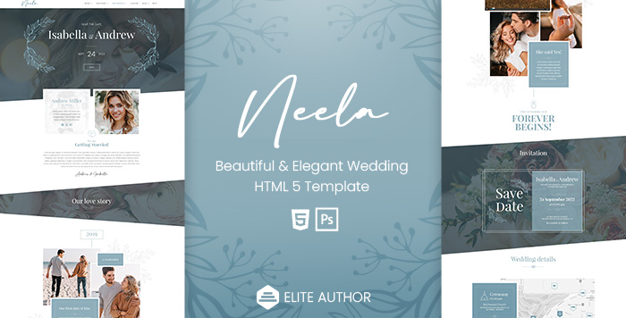
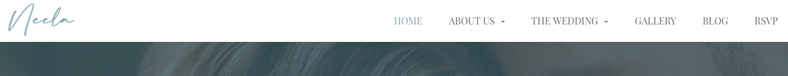
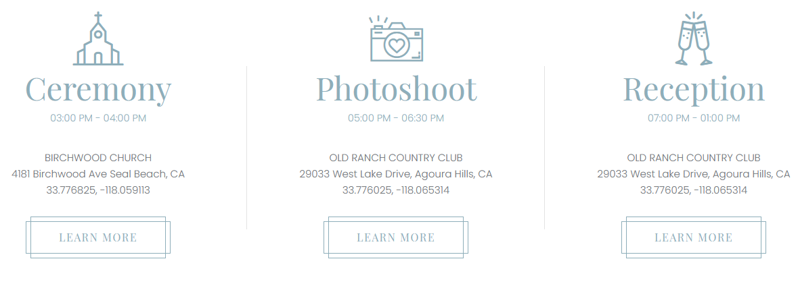
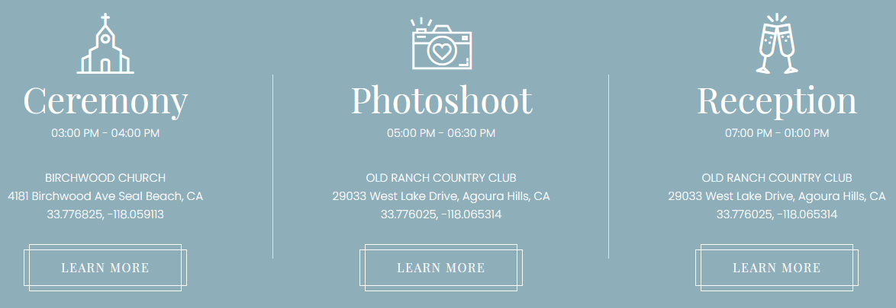
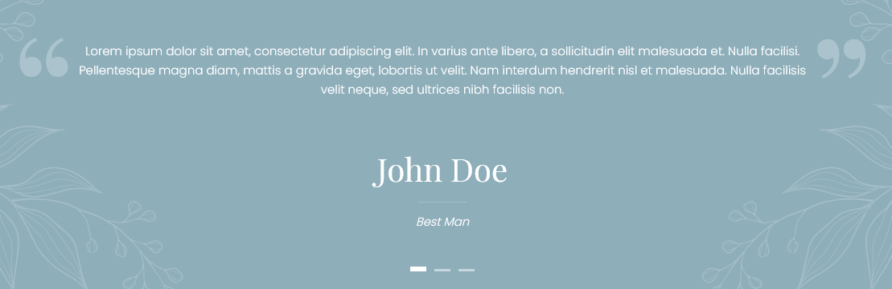
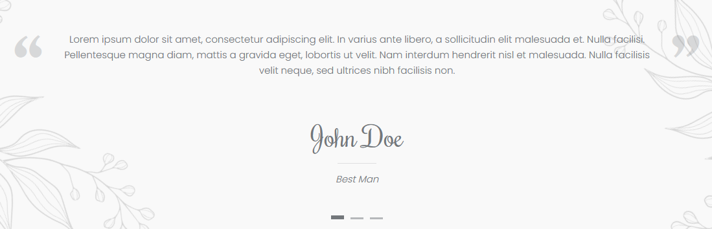
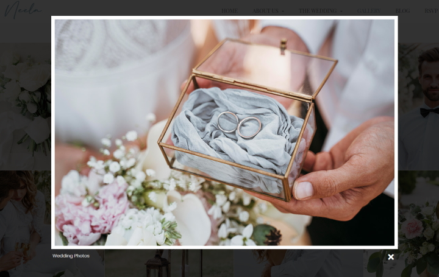
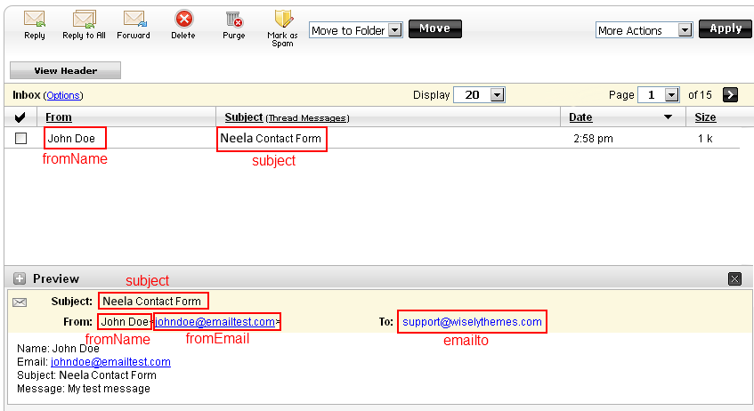

Neela
One-Page/Multi-page Wedding HTML5 Template
- Created: September 2021
- By: WiselyThemes
Thank you for purchasing Neela - One-Page/Multi-page Wedding HTML5 Template! You will find all the help you need within the documentation below, for any further assistance feel free to contact us through the item' support form at ThemeForest. We'll be happy to answer your questions.
About this Template
Neela, it's a clean and elegant HTML5 Template that includes every feature you'll need to build your own incredible wedding announcement website or even to create a unique wedding planning blog.
This template is, without a doubt, an impressive and unique way to invite your friends and family to your wedding and to let them know all about the ceremony details. With Neela, you get extraordinary pre-designed sections and inner pages, such as: Relationship timeline, wedding Countdown, wedding location and details, gift registry, image gallery, Blog, RSVP form and so much more!
Developed in HTML5 and CSS3, Neela is an extremely customizable website template that you can use as a one-page, as a multi-page or simply as a landing page, it's up to you!
It has a fully responsive structure developed with Bootstrap 5 Framework, and it's retina ready, so it looks stunning on all types of screens and devices (desktop, notebook, tablet, and mobile).

PSD Files Included
This template has 17 PSD files included. The PSDs were built with vector layer shapes and smart objects to make it easy for you to edit and update all of the components according to your needs. They are all layered and well organized (images not included):
- Neela_Home_Invitation.psd (Landing page)
- Neela_Home_Onepage.psd (One-page Slideshow)
- Neela_Home_Onepage_Video.psd (One-page Video)
- Neela_Home_Multipage.psd (multi-page)
- Neela_About_Us.psd
- Neela_Blog_Left_Sidebar.psd
- Neela_Blog_Right_Sidebar.psd
- Neela_Blog_Without_Sidebar.psd
- Neela_Blog_Without_Sidebar2.psd
- Neela_Gallery.psd
- Neela_Gallery2.psd
- Neela_Gallery3.psd
- Neela_Gift_Registry.psd
- Neela_Rsvp.psd
- Neela_Single_Post.psd
- Neela_Wedding_Details.psd
- Neela_Wedding_Party.psd
Note that all the images used in the Neela template are not included and were used for preview purpose only.
To preview the PSD files correctly you need to install the “Poppins” font from Google web fonts (Poppins, by Indian Type Foundry) and “Playfair Display” font from Google web fonts (Playfair Display, by Claus Eggers Sørensen )
HTML Structure
This template is based on Bootstrap's 12 columns grid system. To know more about this framework, please check the Bootstrap docs here.
Here's the general structure:

CSS/SASS Files and Structure
We are using one main SASS file(style.scss) and six CSS files on this template. Sass is a stylesheet language that’s compiled to CSS. It allows you to use variables, nested rules, mixins, functions, and more, all with a fully CSS-compatible syntax. (Learn more here)
If you are not familiar with SASS, you can directly edit the file style.css.
- style.scss - Contains all of the specific stylings for the page
- style.css - CSS file compiled from style.scss file
- rtl.css - CSS styles for RTL version of Neela
- bootstrap.min.css - Bootstrap grid styles
- bootstrap.rtl.min.css - Bootstrap RTL styles
- neela-icon-set.css - Essencial icons for Neela template
- fontawesome-all.min.css - Most popular icon set and toolkit
- owl.carousel.min.css - Stylesheet for Owl Carousel slider
style.scss structure:
/* Table of Content ================================================== #Variables #Mixins #Sections with background image #Typography #General #Header #Navigation #Hero #About Us #Our Story #Invite #Wedding Location #Bridesmaids & Groomsmen #Testimonials #Gift Registry #Gallery #Blog #Widgets #RSVP #Footer #Lightbox #Media Queries */
If you would like to edit a specific section of the site, simply find the appropriate label in the CSS file, and then scroll down until you find the appropriate style that needs to be edited.
Javascript Files
This template imports 17 Javascript files.
- bootstrap.bundle.min.js
- ismobile.js
- jquery.nicescroll.js
- jquery.placeholder.min.js
- jquery.zoomslider.js
- jquery-3.6.0.min.js
- jquery-migrate-3.3.2.min.js
- jquery-ui.min.js
- lightbox.min.js
- modernizr-3.6.0.min.js
- owl.carousel.min.js
- richmarker.js
- retina.min.js
- scripts.js
- variables.js
- waypoints.min.js
- waypoints-sticky.min.js
The main Javascript files are named script.js and variables.js. The file variables.js contains all necessary variables to customize the template. This way you don't need to edit them in the file scripts.js (in case of future updates that might override this file).
Customization and Styles
We recommend you to do all the CSS changes you might have to do on the style.scss file (such as colors, fonts, background images, etc). Once you have done all the changes, compile your SASS file into CSS. If you don't have SASS installed, you can use an online tool like this one. Note that this online tool only supports 4500 CSS lines at once, so you need to do two runs to compile the entire SASS file (remember to keep the Variables and Mixins section on both runs).
Colors:
The page colors can be changed in CSS or SASS file. If you are using SASS, open the file style.scss in an editor, go to "Variables" section and replace the value of the variable $color with your own color. You can also change the $text-color and $section-bg-color.
If you are editing directly the CSS file, the you need to open the file style.css in an editor with search/replace feature and replace the color #6ab19c with your own. You'll also need to search and replace the color #194f3f (used for color overlay) which is darker version of the main color (this process is automatic in the SASS file).
Fonts:
Neela Template uses two embed fonts from Google Fonts ("Poppins" and "Rochester"). Go to https://fonts.google.com/, choose a font and use the generated code to replace de following tag in the header of the HTML document:
Next, in style.scss go to "Variables" section. You'll find two variables for font-family, one for all major text ($font-family) and other for headings/highlights ($highlight-ff). Replace them with the name of your chosen fonts.
Again, if you are editing directly the CSS file, you'll need to search for the included fonts names ("Poppins" and "Rochester") and replace with your own fonts names.
Navigation Style:
You can choose between 2 navigation styles. To change the navigation style, add/remove the class light from the <div> element with class "nav-section":
Regular Style:

Light Style:
Changing Logo:
Edit images/logo.png or replace on all pages the image source in the folowing line:
Retina Images:
This template is prepared for retina displays. So, for images to look great on this type of screens, you must use Apple's prescribed high-resolution modifier (@2x) to denote high-resolution image variants on your server.
For example, if you have an image on your page that looks like this:
<img src="img/my_image.png" />
It will check your server to see if an alternative image exists at this path:
<img src="img/my_image@2x.png" />
For background images added through CSS, you need to add them like this:
- SASS file(style.scss):
.page-header{
@include background-image-retina("../images/bridesmaids-background", 'jpg');
}
- CSS file(style.css):
.page-header {
background-image: url("../images/bridesmaids-background.jpg");
}
@media (min--moz-device-pixel-ratio: 1.3), (-o-min-device-pixel-ratio: 2.6/2), (-webkit-min-device-pixel-ratio: 1.3), (min-device-pixel-ratio: 1.3), (min-resolution: 1.3dppx) {
.page-header {
background-image: url("../images/bridesmaids-background@2x.jpg");
}
}
Note that the high-resolution image should have twice the size of the low-resolution image. For example, if the low-resolution image has 1920x1080, the high-resolution image must have 3840x2160.
Sections with Background:
Note that all sections set with a background image are grouped in the CSS/SASS file at the section #Sections with background image.
Changing Icons:
We are using 2 font icons in Neela: FontAwesome and Neela Icon Set. Please check https://fontawesome.com/v5.15/icons for the full list of FontAwesome icons you can use.
To insert a FontAwesome icon, you just have to use the following example:
<i class="fab fa-facebook-square"></i>
Neela Icon Set was created to add icons related to the wedding theme. To insert them, you just need to follow this example:
<i class="icon-big-church"></i>
Check bellow the 8 icons included in Neela Icon Set:
Setting Menu Items as active:
If you don't want the menu items to automatically be set as active when scrolling through each corresponding section, you need to set the option onepage_nav to false in the file variables.js. Then you can manually set a menu item as active by adding the class active to the <a> tag. Check the example below:
Creating Submenu Items (Dropdown):
You need to insert the following HTML markup to create the dropdown menu:
Setting Sidebar Left:
To set the sidebar to the left, you need to set the order of the main and aside elements by adding the classes order-2 and order-1 like this:
...
Wedding Details Style:
You can change the wedding details style by adding the class light to the wedding-details element. This is useful if you want to display it over a colored background. Check the example below:
Ceremony03:00 PM - 04:00 PM
BIRCHWOOD CHURCH
Learn More
4181 Birchwood Ave Seal Beach, CA
33.776825, -118.059113Regular Style:
Light Style:

Bridesmaids/Groomsmen Overlay Info Style:
You can change the Bridesmaids/Groomsmen overlay style by switching between the classes bmaid-gmen and bmaid-gmen-color. Check the examples below:

Emily GarciaMaid of honour
Emily GarciaMaid of honour
Testimonials Style:
You can change the testimonials style by adding the class light to the testimonials slider. This is useful if you want to display it over a colored background. Check the example below:
......Light Style:
Regular Style:
Note that you can also change the flowers' color by switching between the classes side-flowers and side-flowers-light (set in the section element).
Features
RTL:
Neela template includes RTL support. To make Neela RTL add the stylesheets bootstrap.rtl.min.css and rtl.css to the head of your HTML document like this:
Next, set the option rtl to true in the file variables.js.
//RTL support var rtl = true; //Set to true if your website is RTL. Otherwise, keep it false.
Hero Background Image Slideshow
To set the background image slidshow, add the class bg-slideshow to your hero section.
To change the background images, open the file variables.js (located in the js folder) and change the variable slideshow_images with your own images names. You can create as much as you want.
var slidehow_images = [ "images/hero-img1.jpg", "images/hero-img2.jpg", "images/hero-img3.jpg", "images/hero-img4.jpg", "images/hero-img5.jpg" ];Remember to load the slideshow JS plugin at the bottom of your HTML document like this:
Hero Background Video
To set a video background in the hero of your website, add the following video tag to the top of your hero section:
Make sure that the class background-video is added to the video tag.
Then set the hero to full-screen by changing the variable hero_full_screen to true in the file variables.js.
Countdown:
To add a countdown to your website, add the class countdown and the data attribute data-date to your div element like this:
Note that you must set the date in the data-date attribute.
You can also change the countdown labels in the file variables.js by changing the following variables:
//COUNTDOWN VARIABLES var c_days = "DAYS"; //Countdown "Days" label var c_hours = "HOURS"; //Countdown "Hours" label var c_minutes = "MIN."; //Countdown "Minutes" label var c_seconds = "SEC."; //Countdown "Seconds" label var countdown_end_msg = "Event Started!"; //Message to display when the countdown reaches the end
Parallax backgrounds:
To configure a Parallax background, you need to add to the section the class "parallax-background". Here is an example:
The images are set in the CSS/SASS file at the section #Sections with background image.
You can also set a color overlay to the parallax background by adding the class bg-color-overlay.
Google maps:
Neela is integrated with the Google Maps API. Google Maps requires an API key in order to display the map on your website. You can get a key by following this link.
To change the information (title, latitude, longitude, icon and infoWindow) of your map markers open the file js/variables.js and edit the existing markers in the variable map_markers. You can delete or create more markers according to your needs. The structure of the variable map_markers should look like this:
//List of map markers var map_markers = [ { "title": "Reception", "latitude": 33.775664, "longitude": -118.065090, "icon": "fas fa-glass-cheers", //Check the full list of icons at http://fortawesome.github.io/Font-Awesome/icons/ "infoWindow": "Old Ranch Country Club
29033 West Lake Drive, Agoura Hills, CA" }, { "title": "Accommodation 1", "latitude": 33.777929, "longitude": -118.076891, "icon": "fas fa-bed", //Check the full list of icons at http://fortawesome.github.io/Font-Awesome/icons/ "infoWindow": "Accommodation 1
Rossmoor, CA 90720" } ];You can set the information of each item, even the marker icon (FontAwesome icons).
There are also global variables for the maps. You can also change them in the file js\variables.js:
//GOOGLE MAP VARIABLES var map_canvas_id = "map_canvas"; //The HTML "id" of the map canvas var map_color = "#6ab19c"; //Google map color var map_initial_zoom = 15; //The initial zoom when Google map loads var map_initial_latitude = 33.779613; //Google map initial Latitude. If "null", the latitude of the first marked will be used var map_initial_longitude = -118.066904; //Google map initial Longitude. If "null", the longitude of the first marked will be used var use_default_map_style = false; //If true, default map style will be usedYou can also use the default google map style by setting the variable use_default_map_style to true.
To properly load Google Maps, you need to load the following libraries at the bottom of your page before loading scripts.js : Google Maps and Richmarker:
Next, you just need to create the canvas for the map like this:
You can choose any ID for your map canvas, but you must make sure that your canvas has the class gmap.
Lightbox:
We are using Lightbox plugin to open images in a lightbox. To set a link to open on a lightbox, add the data attribute data-lightbox to the <a> tag like this:

Social Networks Sharing:
The social network sharing is currently set on the page blog-single-post.html. Firstly, the meta tags for social networks are set at the top of the page inside <head> tag:
Next, insert your sharing info (url, image, caption) at:
Remember to encode the URL's using this tool.
"Scroll-to" buttons:
This button allows you to scroll to an anchor on button click. You can check an example of this button in the hero of index-onepage-slideshow.html (scroll to RSVP section).
To create a "Scroll-to" button you just need to set the link as an anchor and add the class scrolllto like this:
RSVPNote that the href "#rsvp" refers to the id of the section to scroll to.
Show content on scroll:
You have 5 different effects available to show the content on scroll (once they enter the viewport).
- fade - fade in the element
- from-top - slide the element from the top with a simultaneous fade in.
- from-bottom - slide the element from the bottom with a simultaneous fade in.
- from-left - slide the element from the left with a simultaneous fade in.
- from-right - slide the element from the right with a simultaneous fade in.
To apply those effects to an element add the data attributes data-animation-direction and data-animation-delay to the element like this:
Our Love Story
The data attribute data-animation-delay referes to the delay time (in milliseconds) that the effect will take to start.
Contact Form:
To set your contact form information (emailTo, fromName, fromEmail and subject), open the file contact.php and set the following variables:
$emailto = 'youremail@youremail.com'; // Insert the email address that will receive the messages $fromName = 'Your Defaul From Name'; // Insert a default "Name" email address (this field will be displayed in the email header) $fromEmail = 'default@yourdomain.com'; // Insert a default "From" email address (this field will be displayed in the email header) $subject = 'Neela Contact Form'; // Insert a default conctact form subjectCheck the image below for a visual description where the variables are applied.

Here is the HTML markup for the contact form:
Note that in order to allow users to submit the form, you need to have a button with class submit_form (like the example above).
To make fields required, simply add the class "required" to the input field or to the fieldset (in case of grouped checkboxes).
The variables you set in the file contact.php can be overridden by adding to the contact form input fields with classes emailTo, fromName, fromEmail or subject. This can be useful if you want to have different contact forms in different pages and each of them has different emailTo, subject, etc.
On the HTML markup example above:
- the variable fromName is being overridden on the input field "Name"
- the variable fromEmail is being overridden on the input field "Email"
The variables subject and emailto are not being overridden, so it will be used the default value set in the file contact.php. You can also override this variable by using an hidden input text field like this:
Adding new fields to the contact form:To add new fields you simply have to add them inside the html <form> tag (there's no need to change anything in the PHP or JS code.
For example, if you want to add a phone field to the contact form, you just have to use the following markup:
Note that we have set the field has required, but you can remove this by removing the class "required".
reCaptcha (v2):
To properly add reCaptcha (v2) to your contact form, you first need to grab your reCaptcha Site Key and Secret Key from http://www.google.com/recaptcha. Make sure you get a V2 key.
After you get your reCaptcha (v2) keys, insert your Secret Key in the file contact.php in the following line:
// Insert your Google reCaptcha V2 secret key $secretkey = "xxxxxxxxxxxxxxxxxxxxxxxxxxxxxxxxxxxxx";Next, paste the following snippet before the closing </body> tag on your HTML template:
<script src="https://www.google.com/recaptcha/api.js" async defer>At last, add the following HTML markup before your sumbit button and insert your Site Key in the attribute data-sitekey:
Sources and Credits
The images* used in the theme preview are from:
- Pexels: https://www.pexels.com/collections/neela-wedding-template-zkqtrc4/
- Unsplash: https://unsplash.com/collections/Jy9PN5pii08/neela---wedding-template
- Freepik: https://www.freepik.com/collection/neela-wedding-template/2449512
- Adobe Stock: https://shared-assets.adobe.com/link/ecd5b75c-bf50-4d53-410d-0e282a002ee5
- FlatIcon: https://www.flaticon.com/collections/MjM4MDcxNQ
* Images are not included in this template.
Fonts:
- Google Fonts- Poppins, Designed by Indian Type Foundry, Jonny Pinhorn
- Google Fonts- Playfair Display, Designed by Claus Eggers Sørensen
- Font Awesome- Most popular icon set and toolkit
- Neela Icon Set- Custom font for Neela template
Scripts:
- bootstrap.bundle.min.js http://getbootstrap.com/
- jquery.nicescroll.js http://nicescroll.areaaperta.com/
- jquery.placeholder.min.js http://mths.be/placeholder
- jquery.zoomslider.js https://github.com/mingyeungs/jquery-zoomslider
- jquery-3.6.0.min.js http://jquery.com/
- jquery-migrate-3.3.2.min.js https://plugins.jquery.com/migrate/
- jquery-ui.min.js http://jqueryui.com
- lightbox.min.js http://lokeshdhakar.com/projects/lightbox2/
- modernizr-3.6.0.min.js http://modernizr.com/
- owl.carousel.min.js https://owlcarousel2.github.io/OwlCarousel2/
- richmarker.js https://github.com/googlemaps/js-rich-marker
- retina.min.js http://imulus.github.io/retinajs/
- waypoints.min.js https://github.com/imakewebthings/waypoints
- waypoints-sticky.min.js https://github.com/imakewebthings/waypoints
Thank You!
Once again, thank you so much for purchasing this template. As we said at the beginning, we will be glad to help you if you have any questions relating to this template.
WiselyThemes